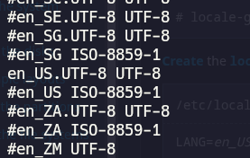
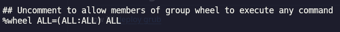

> Installing ArchLinux
The main goal of this guide is to help new users install an Arch Linux system with UEFI. We will use Btrfs as our file system because of its advanced features, including copy-on-write, snapshots, and efficient storage management. Additionally, we will set up automatic snapshots to make system recovery and data protection easier.
By the end of this guide, you will have a minimal Arch Linux system installed and ready for customization. You can then install a window manager such as Hyprland, i3wm, Sway, Bspwm, Qtile or a desktop environment like KDE Plasma.
Sections loaded:
Set up keyboard layout
If you want to know all the available keyboard maps, you must apply the next command
ls /usr/share/kbd/keymaps/**/*.map.gz
Also you can search an specific keyboard map by using grep, in this case, I am looking for an english keybaord
ls /usr/share/kbd/keymaps/**/*.map.gz | grep en
Now you can load the layout
loadkeys it
Internet Connection (wifi)
By running the next command, you should see an output like this
ping -c 1 archlinux.org

If you do not have any internet connection, you must use iwctl To start an interactive mode do:
iwctl
To connect to a network (replace "DEVICE" with your network device and "SSID" with your wifi name):
[iwd]# device list
[iwd]# station DEVICE scan
[iwd]# station DEVICE get-networks
[iwd]# station DEVICE connect SSID
System Clock
To activate the ntp you can do:
systemctl enable systemd-timesyncd.service
Disk Partitioning
First, you have to check your device, you can use the following command:
lsblk
You also can Use fdisk:
fdisk -l
To make the partitions we can use cfdisk:
cfdisk /dev/sda
I am going to use the following partitions by the installation
| Disk | Size | Type |
|---|---|---|
| /dev/sda1 or /dev/nvme0n1p1 | 512M | EFI system |
| /dev/sda2 or /dev/nvme0n1p2 | All the remaining space | Linux filesystem |

Formating and Mounting partitions
I chose btrfs as filesystem due to is generally considered better than ext4 for modern desktop or workstation use because of its advanced data integrity, snapshot, and volume management features:
mkfs.fat -F 32 /dev/sda1
mkfs.btrfs /dev/sda2
mount /dev/sda2 /mnt
Lets Mount the btrfs and efi filesystems, I will compress with zstd because it provides the best balance of high compression ratios, fast compression speeds, and low CPU usage:
btrfs subvolume create /mnt/@
btrfs subvolume create /mnt/@home
umount /mnt
mount -o compress=zstd,subvol=@ /dev/sda2 /mnt
mkdir -p /mnt/home
mount -o compress=zstd,subvol=@home /dev/sda2 /mnt/home
# if we choose /boot instead of /efi we are going to get some system crash if we tried to restore the root subvolume
mkdir -p /mnt/efi
mount /dev/sda1 /mnt/efi
Installing essential packages
In this section we are installing some important packages with pacstrap
pacstrap -K /mnt base linux linux-firmware base-devel git zsh sudo man grub efibootmgr nvim networkmanager wireplumber pipewire pipewire-alsa pipewire-jack pipewire-pulse inotify-tools btrfs-progs timeshift grub-btrfs
Fstab
Use the following command to generate an fstab file
genfstab -U /mnt >> /mnt/etc/fstab
Chroot
We are going directly interact with our system
arch-chroot /mnt
Time
Set the time zone by the next command
ln -sf /usr/share/zoneinfo/Area/Location /etc/localtime
Then we have to generate the /etc/adjtime
hwclock --systohc
Localization
To set the correct languague and region we should edit /etc/locale.gen and uncomment the UTF-8 locales (in my case #en_US.UTF-8)
nvim /etc/locale.gen

The next step is generate the locales by running
locale-gen
To set up the LANG variable we have to create the locale.conf
echo "LANG=en_US.UTF-8" > /etc/locale.conf
Then we are setting the console keyboard layout
echo "KEYMAP=en" > /etc/vconsole.conf
Network configuration
In order to assing and identifiable name to our system, we need to create the hostname file
echo "PedroArchlinux" > /etc/hostname
After creating the hostname file, we are going to add the following line in /etc/hosts (you can use nvim to open the file)
127.0.0.1 localhost
::1 localhost
127.0.1.1 PedroArchlinux
Creating an user
To create an user we must use the following commands
useradd -mG wheel pedro
passwd pedro
To let members of wheel group we have to open the file /etc/sudoers and uncomment an specific line (you can use nvim)
## Uncomment to allow members of group wheel to execute any command
%wheel ALL=(ALL:ALL) ALL

Boot loader
Now we are going to install grub
grub-install --target=x86_64-efi --efi-directory=/efi --bootloader-id=GRUB
Then generate the grub config
grub-mkconfig -o /boot/grub/grub.cfg
Umount and Reboot
exit
umount -R /mnt
reboot
Last Settings
After rebooting and login, we have to connect our system to internet, we are going to use nmcli, but first we have to enable networkmanager
sudo systemctl enable NetworkManager
sudo systemctl start NetworkManager
After that we can use nmcli (repalce SSID with your network name and pass with your network's password)
nmcli dev wifi connect SSID password YOURPASSWORD
Enable the time synchronization service
timedatectl set-ntp true
Automatic Snapshots
By doing automatic snapshots we have to edit the grub-btrfs
sudo systemctl --edit --full grub-btrfsd
# modify the following
# line ExecStart=/usr/bin/grub-btrfsd --syslog --timeshift-auto
# then enable the grub-btrfsd
sudo systemctl enable grub-btrfsd
Installing yay
Yay ("Yet another Yogurt") is a popular, Go-language-based AUR (Arch User Repository) helper for Arch Linux that streamlines installing packages
git clone https://aur.archlinux.org/yay.git
cd yay
makepkg -si
# After installing yay we must install timeshift-autosnap
yay -S timeshift-autosnap
Installing nvidia Drivers
If you have a nvidia card, you might be intereted in the following steps to install your card's drivers
# I am going to use nvidia-dkms and egl-wayland, beacuse I use hyprland and KDE Plasma but if you are not going to use wayland you can avoid installing eg-wayland
sudo pacman -S nvdia-dkms nvidia-utils nvidia-settings linux-headers egl-wayland
Enable DRM Kernel Mode Settings
sudo nvim /etc/default/grub
# find the line GRUB_CMDLINE_LINUX_DEFAULT="loglevel=3 quiet" and add the following line GRUB_CMDLINE_LINUX_DEFAULT="loglevel=3 quiet nvidia_drm.modeset=1"
Then regenerate the GRUB
sudo grub-mkconfig -o /boot/grub/grub.cfg
Adding nvidia modules to initramfs
sudo nvim /etc/mkinitcpio.conf
# find the line which contains MODULES=() and add MODULES=(nvidia nvidia_modeset nvidia_uvm nvidia_drm)
rebuilding mkinitcpio and reboot system
sudo mkinitcpio -P
reboot
check if the Nvidia drivers are correctly installed
nvidia-smi
The end
Have a nice day sr :)